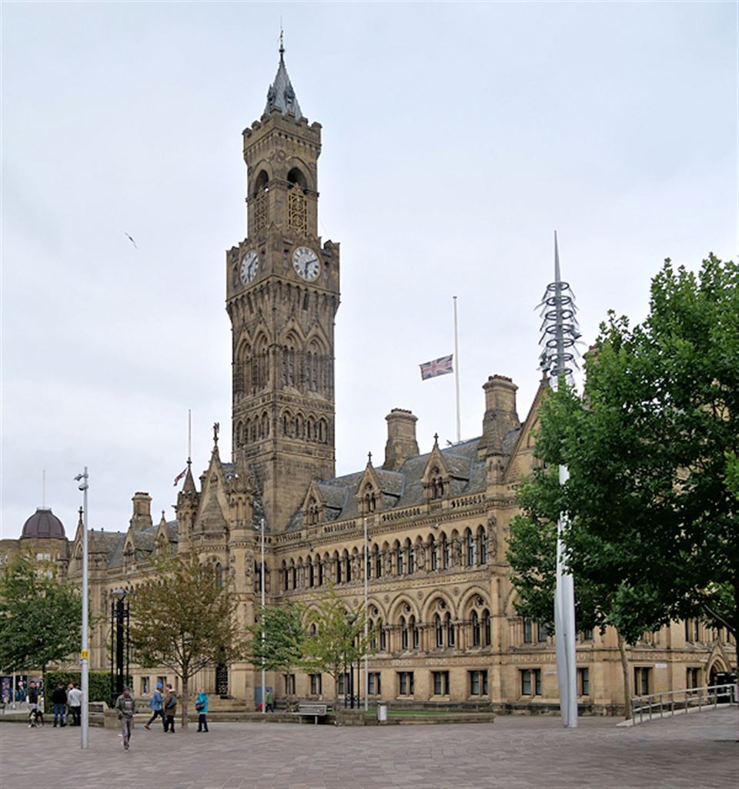
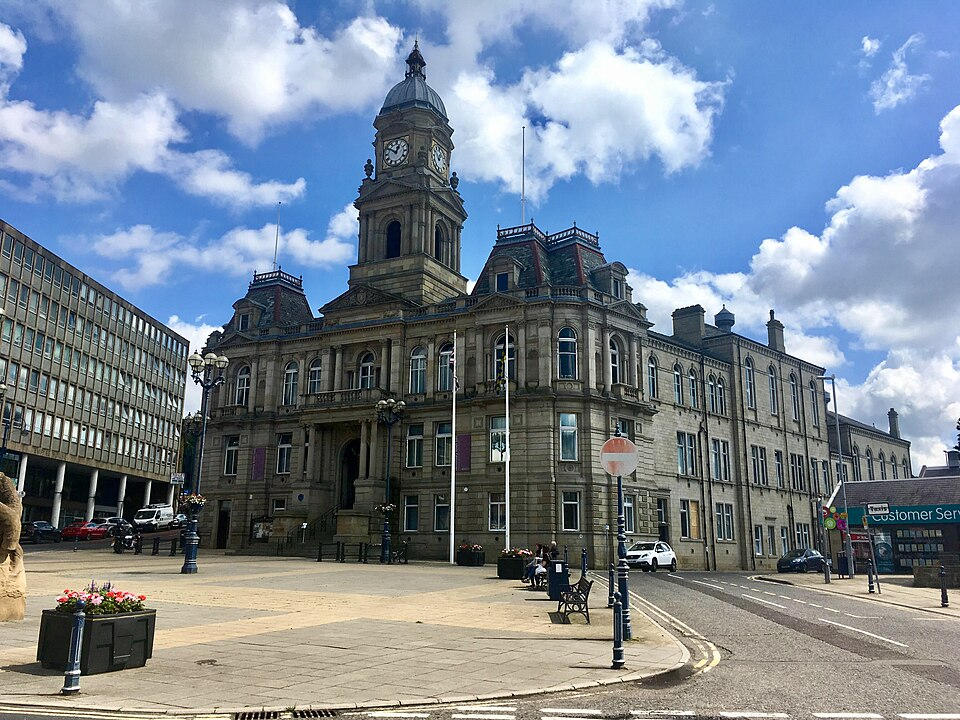

Welcome to the Weaver Network. We are stitching together buses, trains, trams, walking, wheeling, and cycling into one seamless, reliable transport system for West Yorkshire.
The Mayor's Promise
The Weaver Network is my promise to you to deliver a better-connected West Yorkshire. A region on the move. Transport that works for everyone, no matter where you live or how you travel.
Tracy BrabinMayor of West Yorkshire
How It Will Improve Your Journey
From the moment you step out your door to the moment you arrive, the Weaver Network is designed around you.
Joined-up Journeys
Seamlessly switch between buses, trains, trams, and active travel with coordinated timetables and integrated ticketing.
Reliable Services
Consistent timetables designed around what communities actually need, not just what's profitable for operators.
One Ticket, Every Mode
Tap in with contactless, smartcard, or app. Daily and weekly capping ensures you always pay the best fare across all transport.
Real-Time Updates
Live tracking, service alerts, and journey planning all in one place. Know exactly when your bus, tram, or train is arriving.
One Network, Every Mode
The Weaver Network isn't just a new name for buses. It is a unified identity that connects every way you move across West Yorkshire.
Franchised Buses
From Spring 2027, buses across West Yorkshire will operate under public control through the Weaver Network brand. Expect reliable timetables, integrated ticketing, modern electric vehicles with free WiFi and USB charging, and consistent standards across all services.
Learn more →
Rail Integration
We're working closely with Northern, TransPennine Express, and other rail operators to create seamless connections between buses and trains. Coordinated timetables so you never miss a connection, unified branding at key interchange stations.
Learn more →
Mass Transit (Trams)
Plans are underway for a new tram and mass transit system for West Yorkshire, with services potentially running by the late 2030s. Backed by over £200 million in investment and support from communities across the region.
Learn more →
Walking & Wheeling
We're investing in safer, wider pavements and fully accessible routes. More pedestrian crossings with longer crossing times, better street lighting, dropped kerbs and step-free access at all key locations.
Learn more →
Cycling Infrastructure
A comprehensive cycle network with physically protected lanes, secure covered parking at stations, more buses and trains with capacity for bicycles, and major cycle hubs with repair facilities and bike hire.
Learn more →
Ticketing & Fares
Simple, integrated ticketing across all modes. Use contactless, the MCard app, or reloadable smartcards. Daily and weekly capping ensures you always get the best fare. The MCard has already smashed 10 million app ticket sales.
Learn more →
Accessibility
100% low-floor accessible buses with ramps and priority seating, step-free access with lifts and ramps at all major stations, clear audio-visual announcements on all vehicles and at stops.
Learn more →
EV Charging & Cleaner Air
A strong Electric Vehicle charging network across the region. While we champion public and active transport, we recognise some will still need to drive—we're supporting the transition to electric and shared car use.
Learn more →
The Weaver Network at a Glance
A single network designed around the whole of West Yorkshire.
0
Districts United Under One Network
0
Bus Routes Across the Region
0
Low-Floor Accessible Fleet
0
Days a Week Real-Time Information
How the Weaver Network is Rolling Out
A clear timeline for transforming transport across West Yorkshire.
2026
Branding Begins
The Weaver Network branding starts appearing at bus stops and stations on a cost-effective repair and replace basis. Heckmondwike Bus Station is the first to open with the new branding. The WYMetro brand begins its phased retirement.
2027
Buses Launch Under Public Control
The first franchised Weaver Network buses begin operation in Spring 2027. A new website and app launch. Hundreds of new electric buses join the fleet. The WYMetro brand is fully retired.
2028
Full Network Takes Shape
All buses across West Yorkshire will be under public control by the end of 2028. Integrated ticketing is fully operational across all modes. Major interchange stations receive unified Weaver Network branding.
Late 2030s
Trams & Mass Transit
A new tram and mass transit system is planned to begin services, connecting major towns and cities across West Yorkshire. Backed by over £200 million in transformative investment.
Woven Across West Yorkshire
Five districts, one network. Every thread of the Weaver Network is shaped by the communities it serves.
Leeds
The region's largest city and economic hub, home to Leeds Station and the first wave of franchised bus routes.
Bradford
A diverse city with a rich cultural heritage, served by Bradford Interchange and new Weaver Network branding.
Wakefield
The cathedral city, with strong rail connections to Leeds via the modern Wakefield Westgate interchange.
Kirklees
Encompassing Huddersfield and Dewsbury, and home to Heckmondwike Bus Station—the first to open with Weaver Network branding.
Calderdale
From Halifax to Hebden Bridge, connecting urban centres and rural communities across the Pennine valleys.
News & Updates
Stay informed with the latest from the Weaver Network.
31 October 2025
Likely bidders revealed for Weaver Network
35 operators have registered to compete for contracts under the Weaver Network bus franchising model, joining the Combined Authority's 'Dynamic Market' procurement system ahead of the first contracts being awarded in 2026.
Read full story →
29 September 2025
New images of West Yorkshire's first Weaver Network branded bus station revealed
The £10.5m Heckmondwike bus station, delivered by Kirklees Council with the Combined Authority, will be the first to carry the new Weaver Network branding, featuring extra seating, cycle parking, solar panels and a green roof.
Read more →
12 May 2025
Weaver Network will offer made to measure public transport for West Yorkshire
Mayor Tracy Brabin and West Yorkshire's five council leaders officially unveiled the Weaver Network brand at Millennium Square, Leeds, marking a bold new era for public transport inspired by the region's industrial and textile heritage.
Read more →
Voices of West Yorkshire
Real words from the people building and shaping the Weaver Network.
For too long, our region has suffered from a disjointed, confusing, and increasingly hard to navigate public transport system. Our vision for an integrated Weaver Network, offering reliable and seamless travel whether people are travelling by bus, tram or train, includes facilities that are welcoming and accessible for all.
Tracy BrabinMayor of West Yorkshire
With the Mayor's decision to take back control of the bus network, we are now moving towards a fully integrated transport network under one brand.
SH
Cllr Susan HinchcliffeChair, WYCA Transport Committee
This first new Weaver Network branded bus station gives confidence that bus franchising will soon make travelling from A to B by public transport a much more attractive, reliable and accessible option.
MC
Cllr Moses CrookDeputy Leader, Kirklees Council
The children had a wonderful time on their recent visit to the Heckmondwike bus station, and it was a great opportunity to see the project first hand.
CB
Claire BassHeadteacher, Holy Spirit Catholic Primary Academy
Woven into West Yorkshire
The name "Weaver Network" pays direct homage to our region's world-renowned textile heritage. Just as our ancestors wove the fabric of the industrial revolution, we are weaving together a modern, sustainable transport network.
Our visual identity draws inspiration from the diverse cultural fabric of West Yorkshire today. The geometric patterns on our buses echo the work of iconic Yorkshire artists like David Hockney, Barbara Hepworth, and Henry Moore, while celebrating everything from traditional Yorkshire tweeds to vibrant sari prints and African wax prints that reflect our communities today.
To me, the Weaver Network name symbolises the threads connecting people with places, shuttling to and from, built on heritage and creating new ties and links.
— Simon Armitage, Poet Laureate and West Yorkshire resident
0
Full Franchise Rollout
0
Net Zero Target
0
Transformative Investment
0
MCard App Ticket Sales
Frequently Asked Questions
Find answers to common questions about the Weaver Network.
What is the Weaver Network?
The Weaver Network is West Yorkshire's new integrated public transport system, replacing the old Metro brand. From Spring 2027, we'll be bringing bus services under public control, with better routes, integrated ticketing, and modern electric vehicles. We're also working to seamlessly connect buses, trains, trams, cycling, and walking into one unified network.
When will the new buses start running?
The first franchised Weaver Network buses are scheduled to begin operation in Spring 2027. We'll be rolling out services across West Yorkshire throughout 2027 and 2028, starting with major corridors in Leeds, Bradford, Huddersfield, and Wakefield. All buses will be under public control by the end of 2028.
What happens to WYMetro?
The WYMetro brand will be fully retired when the Weaver Network launches in 2027. Branding changes are already happening on a cost-effective repair and replace basis—Heckmondwike Bus Station was the first to open with the new Weaver Network branding in 2026. Your existing Metro smartcards and passes will continue to work and will transition seamlessly to the new system.
Will there be trams in West Yorkshire?
Yes! Plans are underway for a new tram and mass transit system for West Yorkshire, with services potentially running by the late 2030s. This is backed by over £200 million in transformative investment and has strong support from communities across the region, including Leeds United FC. Visit our Mass Transit page for more information.
Will ticket prices change?
We're committed to fair and affordable fares. With integrated ticketing, you'll be able to use one ticket across buses, trains, and other modes of transport. Daily and weekly capping will ensure you always get the best fare. The MCard app has already smashed 10 million ticket sales, and we're building on this success. We also offer concessions for young people, seniors, and those on lower incomes.
How do I report a problem or give feedback?
You can contact our customer services team by phone at 0113 245 7676 or email customer.services@westyorks-ca.gov.uk. We aim to respond to all complaints within 10 working days. You can also use the live chat feature on our website during opening hours.
Is the network accessible for wheelchair users?
Yes! We're committed to making transport accessible for everyone. All our buses will be 100% low-floor accessible with ramps and priority seating. Major stations will have step-free access with lifts and ramps. We also provide audio-visual announcements on all vehicles and at stops, and offer turn-up-and-go assistance at stations. For more information, visit our Accessibility page.
Can I bring my bicycle on buses and trains?
Yes, we're increasing capacity for bicycles on both buses and trains. Many of our new buses will have bike racks, and we're working with rail operators to ensure more trains have space for bicycles. We're also building secure cycle parking at stations and major interchanges. Check individual route information for specific bike capacity.
How do I track buses in real-time?
You can track buses in real-time using our Bus Tracking page. Just click on "Bus Tracking" in the navigation menu or use our mobile app. You'll be able to see where buses are, when they're due to arrive, and get service alerts. You can also sign up for text or email alerts for your regular routes.
What areas does the Weaver Network cover?
The Weaver Network covers all five metropolitan districts of West Yorkshire: Leeds, Bradford, Huddersfield (Kirklees), Wakefield, and Halifax (Calderdale). We're working to provide comprehensive coverage across urban and rural areas, with integrated connections to surrounding regions.
Franchised Buses
A new era of public bus services under public control, delivering better routes, reliable services, and integrated ticketing across West Yorkshire.
What is Bus Franchising?
Bus franchising means that the Weaver Network, through the West Yorkshire Combined Authority, will take control of planning bus routes, setting timetables, and determining fares. This gives local people a real say in how their bus services are run, rather than leaving decisions to commercial operators focused solely on profit.
From Spring 2027, buses across West Yorkshire will operate under the Weaver Network brand, featuring our distinctive lime green and forest green livery with geometric patterns inspired by our textile heritage. All buses will be under public control by the end of 2028.
Key Benefits
Better Routes
Services designed around what people actually need, not just what's profitable for operators.
Integrated Ticketing
One ticket works across all buses, with simple fares and contactless payment options.
Reliable Services
Consistent standards with real-time tracking, better on-time performance, and accountability.
Modern Electric Fleet
Hundreds of new electric buses with free WiFi, USB charging, comfortable seating, and low-floor accessibility.
Fair Fares
Affordable pricing with concessions for young people, seniors, and those on lower incomes.
Environmental Benefits
Cleaner electric buses with zero emissions, contributing to our 2038 net zero target.
Rail Integration
Seamless connections between buses, trams, and trains, making it easier than ever to travel across West Yorkshire and beyond.
Connecting the Network
The Weaver Network is working closely with Northern, TransPennine Express, and other rail operators to create a truly integrated transport system. This means easier transfers, coordinated timetables, and unified branding at key stations.
Key Interchange Stations
Leeds Station
Major hub connecting buses, trains, trams, and future mass transit options.
Bradford Interchange
Integrated bus and rail station in the heart of Bradford.
Huddersfield Station
Key connection point for services across West Yorkshire and beyond.
Wakefield Westgate
Modern interchange with excellent bus connections.
Mass Transit (Trams)
A new tram and mass transit system for West Yorkshire, planned for the late 2030s.
Trams Are Coming to West Yorkshire
Plans are underway for a new tram and mass transit system that will connect major towns and cities across West Yorkshire. Services are potentially running by the late 2030s, backed by over £200 million in transformative investment from the West Yorkshire Combined Authority.
The mass transit system will complement our franchised bus network and rail services, providing a high-capacity, reliable transport option for the region's growing population.
Why Mass Transit?
High Capacity
Trams can carry far more passengers than buses, reducing congestion on our busiest routes.
Reliable & Fast
Dedicated tracks mean trams aren't stuck in traffic, providing predictable journey times.
Zero Emissions
Electric trams produce no local air pollution, supporting our 2038 net zero target.
Economic Growth
Mass transit systems are proven to drive regeneration and attract investment to surrounding areas.
Community Support
The mass transit plans have strong backing from communities across West Yorkshire, including Leeds United FC, who see the transformative potential for the region. Public consultation is ongoing to shape the final routes and stations.
Walking & Wheeling
Making active travel safer, easier, and more accessible for everyone across West Yorkshire.
Investing in Active Travel
The Weaver Network is committed to making walking and wheeling the natural choice for shorter journeys. We're investing over half a million pounds in walking, wheeling, and cycling hubs across the region, with better pavements, safer crossings, and more accessible routes.
What We're Doing
Wider Pavements
Creating more space for pedestrians, especially in busy town centres.
Safer Crossings
More pedestrian crossings with longer crossing times and better visibility.
Accessible Routes
Step-free access and dropped kerbs throughout the network.
Better Lighting
Improved street lighting to make walking safer at night.
Cycling Infrastructure
Building a comprehensive cycle network that makes cycling safe, convenient, and enjoyable for everyone.
Cycling Across West Yorkshire
We're creating a comprehensive cycle network with protected lanes, secure parking, and direct routes that connect residential areas with employment centres, schools, and transport hubs. Over half a million pounds is being invested in cycling hubs across the region.
Cycle Network Features
Protected Lanes
Physically separated cycle lanes that keep cyclists safe from traffic.
Secure Parking
Covered, monitored cycle parking at stations and key destinations.
Bike on Board
More buses and trains with capacity for bicycles.
Cycle Hubs
Major interchange points with repairs, hire, and facilities.
Ticketing & Fares
Simple, integrated ticketing across all modes of transport. One app, one card, seamless travel.
One Network, One Ticket
The Weaver Network is introducing integrated ticketing that works across buses, trains, trams, and future mass transit. Whether you're using contactless payment, the MCard app, or a smartcard, your journey will be seamless.
The MCard has already smashed 10 million app ticket sales, proving that West Yorkshire residents want simple, integrated ticketing. We're building on this success to make travel even easier.
Ticketing Options
Contactless Payment
Tap in, tap out with your bank card or mobile device. Daily and weekly capping ensures you always get the best fare.
MCard App
The region's most popular ticketing app, with over 10 million tickets sold. Buy tickets, plan journeys, and get real-time updates all in one place.
Smartcards
Reloadable cards for regular travellers, with season tickets and multi-journey options. Existing Metro smartcards will transition seamlessly.
Fair Fares
Affordable pricing with concessions for young people, seniors, and those on lower incomes.
Accessibility
Making transport accessible for everyone, regardless of ability. Transport that works for all of West Yorkshire.
Accessible Transport for All
The Weaver Network is committed to ensuring that everyone can use public transport independently and with dignity. We're making improvements across the entire network to remove barriers and create a truly inclusive transport system.
Accessibility Features
Step-Free Access
Lifts and ramps at all major stations and interchanges.
Audio-Visual Announcements
Clear announcements and displays on all vehicles and at stops.
Low-Floor Buses
100% accessible fleet with ramps and priority seating.
Assistance Services
Turn-up-and-go assistance at stations and dedicated support lines.
EV Charging & Cleaner Air
Supporting the transition to electric vehicles while championing public and active transport.
A Cleaner West Yorkshire
While the Weaver Network champions public and active transport, we recognise that some journeys will still need to be made by car. That's why we're building a strong Electric Vehicle charging network across the region and supporting the transition to electric and shared car use.
What We're Doing
EV Charging Network
Rapid charging points at transport hubs, car parks, and key locations across West Yorkshire.
Electric Buses
Hundreds of new zero-emission electric buses joining the fleet from 2027.
Shared Car Schemes
Supporting car clubs and shared vehicle schemes to reduce private car ownership.
Clean Air Zones
Working with local councils to improve air quality in town and city centres.
Our Heritage
From the textile mills of the Industrial Revolution to the modern transport network of today—woven into the fabric of West Yorkshire.
A Legacy of Innovation
West Yorkshire has always been at the forefront of transport innovation. From the horse-drawn trams of the 19th century to the modern bus networks of today, our region has a proud history of connecting communities and enabling economic growth.
The Weaver Network represents the latest chapter in this story. Launched in 2026 by the West Yorkshire Combined Authority, we're replacing the old Metro brand with a fresh, modern identity that reflects both our heritage and our ambition for the future.
The Name "Weaver Network"
Our name pays homage to West Yorkshire's world-renowned textile industry. For centuries, our region was the global centre for wool and cloth production, with mills and factories weaving fabrics that were exported around the world.
Just as our ancestors wove threads into cloth, we're weaving together different modes of transport—buses, trains, trams, cycling, walking—into a single, integrated network.
The name was chosen with input from Simon Armitage, the Poet Laureate and West Yorkshire resident, who said: "To me, the Weaver Network name symbolises the threads connecting people with places, shuttling to and from, built on heritage and creating new ties and links."
Cultural Diversity in Our Design
Our visual identity celebrates the diverse cultural fabric of West Yorkshire today. The geometric patterns on our vehicles and stations draw inspiration from:
Yorkshire Tweeds
Traditional woven patterns that reflect our industrial heritage.
Sari Prints
Vibrant colours and patterns celebrating our South Asian communities.
African Wax Prints
Bold designs reflecting the rich cultural heritage of our African and Caribbean communities.
Iconic Yorkshire Art
The distinctive patterns echo the work of David Hockney, Barbara Hepworth, and Henry Moore.
Where We Operate
Leeds
The region's largest city and economic hub.

Bradford
Home to a diverse population and rich cultural heritage.
Huddersfield
A historic market town with excellent transport links.
Wakefield
The cathedral city with strong connections to Leeds.

Kirklees
Encompassing Huddersfield, Dewsbury, and surrounding towns.
Calderdale
From Halifax to Hebden Bridge, connecting urban and rural communities.
Local Transport Plan
Our strategic vision for transforming transport across West Yorkshire to 2038 and beyond.
Our Strategic Vision
The Local Transport Plan (LTP) sets out the Mayor of West Yorkshire's vision for transforming transport across the region. It's our roadmap for creating a sustainable, inclusive, and efficient transport system that supports economic growth, improves public health, and tackles climate change.
Key Objectives
Climate Action
Achieving net zero carbon emissions from transport by 2038.
Health & Wellbeing
Improving public health through active travel and better air quality.
Economic Growth
Connecting people to jobs, education, and training opportunities.
Social Inclusion
Ensuring everyone can access transport regardless of age, ability, or income.
Get Involved
Help shape the future of transport in West Yorkshire. Your voice matters.
Have Your Say
The Weaver Network is being designed for everyone who lives, works, and visits West Yorkshire. We want to hear from you about what matters most in your daily journeys.
Current Consultations
Local Transport Plan Consultation
Help shape the long-term vision for transport in West Yorkshire. Everyone living or working in the region is invited to contribute to the Local Transport Plan consultation.
The latest news, announcements, and service updates from the Weaver Network.
15 January 2026
Weaver Network unveiled as 'new era' for West Yorkshire public transport
The West Yorkshire Combined Authority has officially launched the Weaver Network brand, replacing Metro with a fresh identity inspired by the region's textile heritage.
Read full story on BBC News →
10 January 2026
Bus franchising plans for West Yorkshire revealed
New timeline revealed for bus franchising rollout across Kirklees.
Read more →
5 January 2026
Work underway at Huddersfield bus station
Improvements and upgrades continue at Huddersfield bus station as part of the wider Weaver Network transformation.
Read more →
Accessibility Statement
Our commitment to making the Weaver Network website accessible to everyone.
How accessible this website is
We want as many people as possible to be able to use this website. For example, that means you should be able to:
change colours, contrast levels and fonts
zoom in up to 300% without the text spilling off the screen
navigate most of the website using just a keyboard
navigate most of the website using speech recognition software
listen to most of the website using a screen reader (including the most recent versions of JAWS, NVDA and VoiceOver)
We've also made the website text as simple as possible to understand.
Compliance status
This website is partially compliant with the Web Content Accessibility Guidelines version 2.1 AA standard.
Non-accessible content
Live bus tracking map
The interactive map on our Bus Tracking page is not fully accessible to screen reader users. We are working to improve this and expect to have a fully accessible alternative by Autumn 2026.
PDF documents
Some of our PDF documents are not fully accessible to screen reader software. This is a priority and we are working to fix these issues.
What we're doing to improve accessibility
Regular accessibility audits by independent experts
User testing with people who have disabilities
Staff training on accessibility best practices
Ongoing improvements based on user feedback
Reporting accessibility problems
We're always looking to improve the accessibility of this website. If you find any problems not listed on this page or think we're not meeting accessibility requirements, contact us:
Post: Weaver Network, 11 Bond Street, Leeds, LS1 5BQ
Enforcement procedure
The Equality and Human Rights Commission (EHRC) is responsible for enforcing the Public Sector Bodies (Websites and Mobile Applications) (No. 2) Accessibility Regulations 2018. If you're not happy with how we respond to your complaint, contact the Equality Advisory and Support Service (EASS).
Technical information
The West Yorkshire Combined Authority is committed to making its website accessible, in accordance with the Public Sector Bodies (Websites and Mobile Applications) (No. 2) Accessibility Regulations 2018.
Preparation of this accessibility statement: This statement was prepared on 15 January 2026. It was last reviewed on 8 June 2026.
This website was last tested on 1 June 2026. The test was carried out by the WYCA Digital Accessibility Team using automated testing tools and manual testing with assistive technologies.
Privacy Policy
How we collect, use, and protect your personal information.
Introduction
The West Yorkshire Combined Authority (Weaver Network) is committed to protecting your privacy and ensuring that your personal information is handled in a safe and responsible way. This policy outlines how we collect, use, and protect your data when you use our website and services.
Information We Collect
We may collect the following types of information:
Personal Information: Name, email address, phone number, and postal address when you contact us or create an account
Journey Data: Travel patterns, routes used, and journey planning information
Technical Information: IP address, browser type, operating system, and device information
Usage Data: Pages visited, time spent on pages, and interaction with our services
How We Use Your Information
We use your information to:
Provide and improve our transport services
Process ticket purchases and journey planning
Send service updates, alerts, and important notifications
Respond to your enquiries and provide customer support
Analyse usage patterns to improve our services
Comply with legal obligations
Data Security
We implement appropriate technical and organisational measures to protect your personal information against unauthorised access, alteration, disclosure, or destruction. This includes encryption, secure servers, and regular security assessments.
Your Rights
Under data protection law, you have the right to:
Access your personal data
Request correction of inaccurate data
Request deletion of your data
Object to processing of your data
Request restriction of processing
Data portability
Contact Us
If you have any questions about this privacy policy or our data practices, please contact our Data Protection Officer at dpo@westyorks-ca.gov.uk or write to us at: Weaver Network, 11 Bond Street, Leeds, LS1 5BQ.
Last updated: 8 June 2026
Terms of Use
Terms and conditions for using the Weaver Network website and services.
Acceptance of Terms
By accessing and using the Weaver Network website and services, you accept and agree to be bound by these Terms of Use. If you do not agree to these terms, please do not use our services.
Use of Services
You agree to use the Weaver Network services only for lawful purposes and in accordance with these terms. You agree not to:
Use the service in any way that causes or may cause damage to the service
Access or attempt to access any part of the service by any means other than through the interface provided
Use the service for any unauthorised purpose
Interfere with, disrupt, or create an undue burden on the service
Accuracy of Information
While we strive to provide accurate and up-to-date information about services, timetables, and fares, we cannot guarantee that all information is completely accurate or current. Service information may change without notice.
Limitation of Liability
The Weaver Network provides services on an "as is" and "as available" basis. We do not warrant that the service will be uninterrupted, secure, or error-free. We shall not be liable for any indirect, incidental, special, consequential, or punitive damages resulting from your use of the service.
Intellectual Property
All content, features, and functionality of the Weaver Network website and services, including but not limited to text, graphics, logos, and software, are the exclusive property of the West Yorkshire Combined Authority and are protected by copyright, trademark, and other intellectual property laws.
Changes to Terms
We reserve the right to modify these terms at any time. We will notify users of any material changes by posting the new terms on this page. Your continued use of the service after such changes constitutes acceptance of the new terms.
Governing Law
These terms shall be governed by and construed in accordance with the laws of England and Wales. Any disputes arising under these terms shall be subject to the exclusive jurisdiction of the courts of England and Wales.
Last updated: 8 June 2026
Cookie Policy
How we use cookies and similar technologies on the Weaver Network website.
What Are Cookies?
Cookies are small text files placed on your device when you visit a website. They are widely used to make websites work more efficiently and to provide information to website owners. Cookies do not contain any personally identifiable information on their own.
How We Use Cookies
The Weaver Network website uses cookies to:
Remember your preferences and settings (such as your cookie consent choice)
Understand how visitors use our website so we can improve it
Ensure the website functions correctly
Provide a consistent experience across your visits
Types of Cookies We Use
Strictly Necessary Cookies
These cookies are essential for the website to function. Without them, services you have asked for cannot be provided. They cannot be switched off in our systems.
Cookie name
Purpose
Expires
weaverCookieConsent
Stores your cookie consent choice so we don't ask again
1 year
weaverCookiePrefs
Stores your detailed cookie preferences (e.g. analytics on/off)
1 year
Analytics Cookies
These cookies help us understand how visitors interact with our website by collecting and reporting information anonymously. Enabling them helps us improve the site for everyone.
Cookie name
Purpose
Expires
_ga
Google Analytics — distinguishes unique users
2 years
_ga_*
Google Analytics — maintains session state
2 years
Managing Your Cookie Preferences
You can change your cookie preferences at any time by clicking the Settings button on the cookie banner, or by clicking the button below.
You can also control cookies through your browser settings. Most browsers allow you to refuse cookies, delete existing cookies, or receive a warning before a cookie is placed. Please refer to your browser's help documentation for instructions:
Google Fonts — used to load typography. Google may set performance-related cookies.
We do not control these third-party cookies. Please refer to the relevant third-party privacy and cookie policies for more information.
Changes to This Policy
We may update this cookie policy from time to time to reflect changes in the cookies we use or for other operational, legal, or regulatory reasons. Please revisit this page regularly to stay informed about our use of cookies.
Contact Us
If you have any questions about our use of cookies, please contact us at digital@westyorks-ca.gov.uk or write to: Weaver Network, 11 Bond Street, Leeds, LS1 5BQ.
Last updated: 16 June 2026
Redirecting you to
Help Shape the Future of Transport
Everyone living or working in West Yorkshire is invited to help shape the Local Transport Plan. Share your views on the transport improvements that matter most to you.
We use cookies on this website
We use cookies to make this website work, analyse traffic, and improve your experience. By continuing to use this site, you agree to our use of cookies. Read our cookie policy for more information.
Cookie settings
Choose which categories of cookies you're happy for us to use. You can change these settings at any time.
Strictly necessary
Required for the website to function, such as remembering your cookie preferences. These cannot be switched off.
Analytics
Helps us understand how visitors use the site so we can improve it. Data is anonymised.
![]()